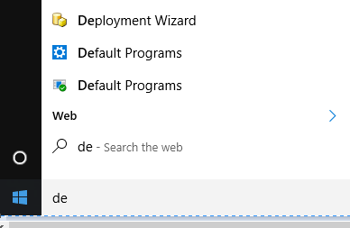
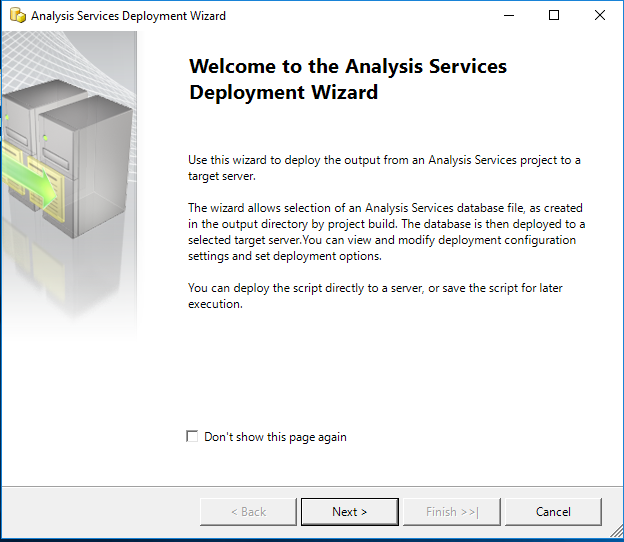
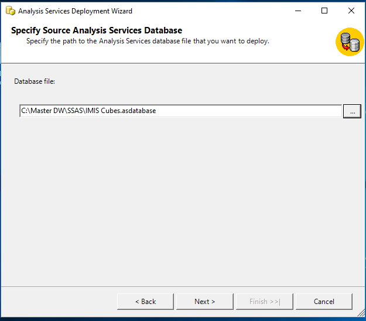
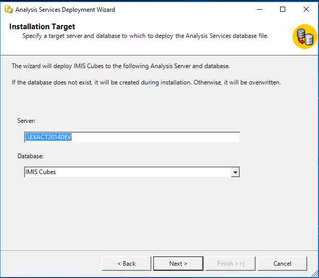
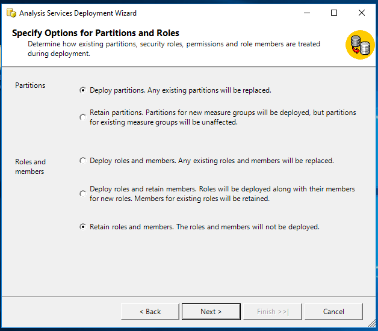
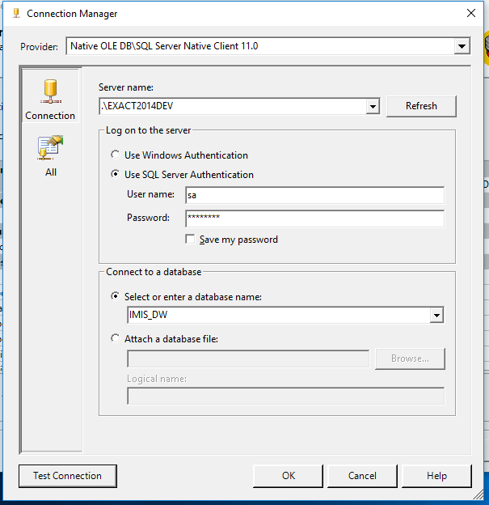
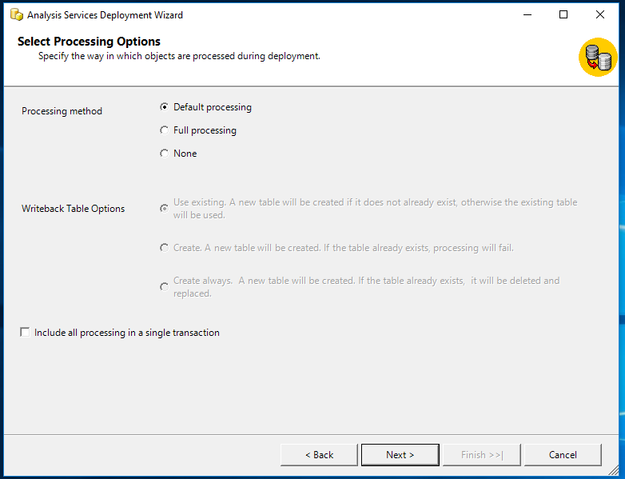
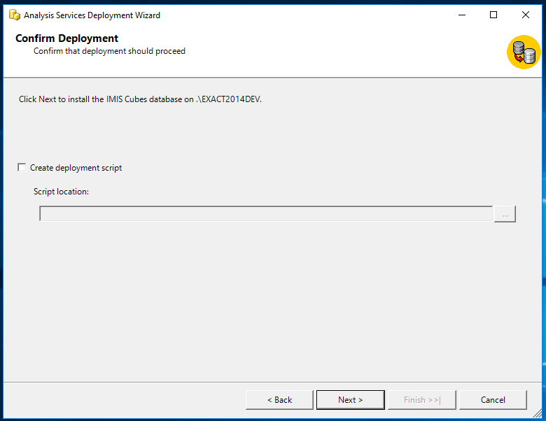
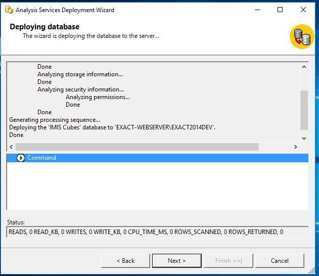
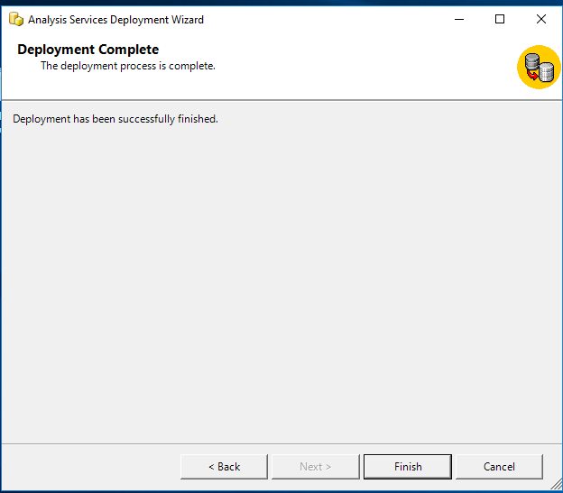

Deploy SSAS¶
- Open the SQL Server Management studio and restore the database IMIS_DW.
Close the SQL server management studio
Click the windows start button, search for the Deployment Wizard. Click the Deployment wizard icon(Image - SSAS deployment wizard, Launch wizard).
Image - SSAS deployment wizard, Launch wizard
Click next to start the installation for SSAS(Image - SSAS deployment wizard, Start).
Image - SSAS deployment wizard, Start
- Click the browse button (three dots) and select the IMIS cubes database from the SSAS deployment package(Image - SSAS deployment wizard, Destination folder).
Click next to continue with the installation.
Image - SSAS deployment wizard, Destination folder
- If the database does not exist on the Analysis Server, the Analysis Service Deployment Wizard will automatically create the database IMIS Cubes otherwise the database will be overwritten !
Click next to continue (Image - SSAS deployment wizard, Deploy IMIS cubes).
Image - SSAS deployment wizard, Deploy IMIS cubes
- Specify options for partitions, roles and members according to the requirements.
Click next to continue(Image - SSAS deployment wizard, Partitions & Roles).
Image - SSAS deployment wizard, Partitions & Roles
- On the providers select box, choose SQL server Native client.
- On the left side of the connection manager select connection.
- Click the refresh button and select the instance name.
- On the Log on to the server panel, provide username and Password for the instance selected.
- Under the connect to a database panel select the IMIS_DW.
- Verify the connection by clicking the Test Connection button.
- Click OK to continue with the installation(Image - SSAS deployment wizard, SQL server).
Image - SSAS deployment wizard, SQL server
- On the Select Processing Options window, select the appropriate option.
Click next to continue with the deployment(Image - SSAS deployment wizard, Processing).
Image - SSAS deployment wizard, Processing
- Confirm Deployment. If the deployment script is required, check the Create Deployment Script option and browse to the destination folder.
Click next to continue(Image - SSAS deployment wizard, Finish).
Image - SSAS deployment wizard, Finish
- Deploying Database
- Click next to continue(Image - Database deployment wizard, Run).
Image - Database deployment wizard, Run
- Click finish to complete the deployment(Image - Database deployment wizard, Results).
Image - Database deployment wizard, Results